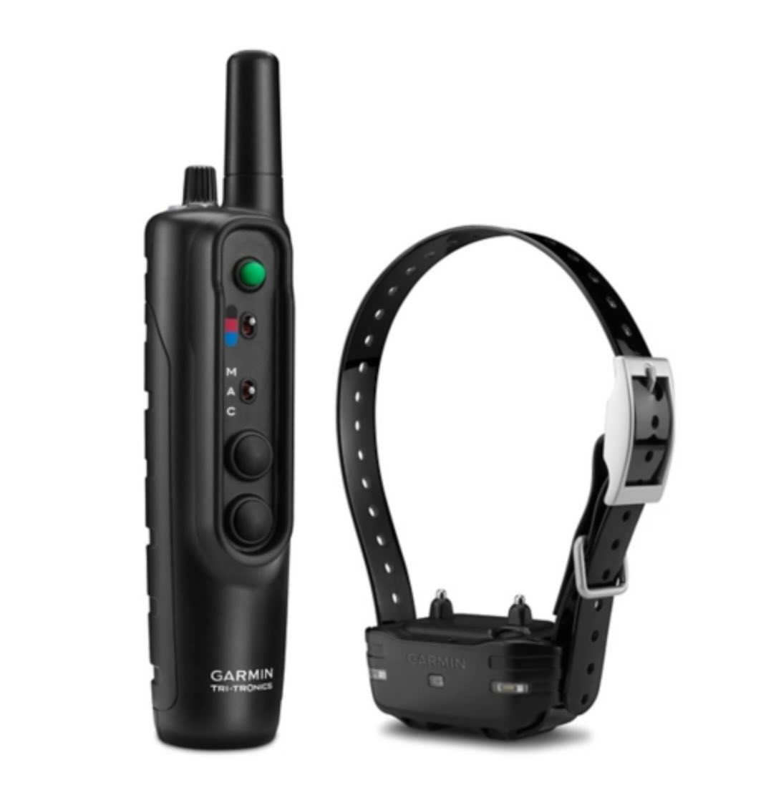

Episode 37 · May 20, 2025 · 3025
E- Collars what we use and recommend. What we like and don't like.

About This Episode
In this episode we discuss electric collars for dog training. We go over three main brands. Dogtra, Garmin & Sportdog. The things that we like and don't like. If you are wondering what we use on a daily basis check this one out. On a side note it does look like Dogtra has changed their e - collars to have waterproof contact points
Questions about the training topics in this episode? Tyce works with bird dog owners and hunters through Utah Bird Dog Training. Reach out to work with him directly.
Resources & Links
- Kuranda Dog Beds — Elevated, chew-proof dog beds.
- Utah Bird Dog Training — Tyce's professional training services.
Transcript
Full transcript for Episode 37: E- Collars what we use and recommend. What we like and don't like..
Tyce
Hey everyone, welcome to the Bird Dog Podcast. My name is Tyce. Today I want to talk about e-collars — what we use, what we recommend, and what I've learned works and doesn't work over years of running dogs on them every day.
The collar we use most and recommend most is the Garmin Pro 550. Let me walk through why. The Pro 550 has a one-mile range — and yes, your dog is almost never going to be a mile away from you. But range matters for a different reason: the signal has to punch through terrain. Trees, brush, hills, buildings all degrade signal. If you start with a collar that only has a three to four hundred yard range in open country, you might be down to 80 yards in a stand of timber during a grouse hunt. More range gives you a buffer. Half-mile minimum is where I'd want to be; the Pro 550's mile range is solid insurance.
The transmitter is waterproof, and here's something I didn't know until I accidentally dropped mine — it floats. That's a useful feature if you're a duck hunter working from a boat or in the marsh. Drop your transmitter in the water and it floats back up. Nice to know before you need to know it.
The Pro 550 has seven stimulation levels, and each level has a low, medium, and high setting. That gives you 21 effective levels of precision. You can dial in exactly what your dog responds to. If you're at level three and need a quick step-up for a correction, you can hit both buttons simultaneously to jump to high on that level, or move up one level to medium. You're not fumbling around with a dial in the middle of a hunt.
One downside compared to the old Triton Pro 100 (which Garmin acquired and rebranded): the Pro 550 has a lower ceiling on maximum stimulation. The Pro 100 had more headroom at the high end, and occasionally I'll encounter a dog that is genuinely insensitive to electricity. These dogs exist — probably one in a hundred. Put them on the highest setting and they just don't feel it. The Pro 100 could reach those dogs. My understanding is this may be a liability decision on Garmin's part. For 95% of dogs it's irrelevant — most dogs respond at low to medium levels and you'll rarely touch anything near the high end.
The Garmin Sport Pro is a step down from the 550. It uses a thumb dial numbered one through nine rather than the button-and-level system. Less fine-tuning, but it's a functional collar for someone who doesn't need the precision of the 550 or is running a dog that's clearly in the easy-to-collar-condition range. If you're starting out and cost is a factor, the Sport Pro will get the job done.
On the Sport Dog side, the 1825 is a common collar I see. One note there: for very sensitive dogs, even the lowest setting on some Sport Dog collars can be too much. It's worth testing your dog at the lowest level before you assume they need more. Collar-sensitive dogs need the kind of fine-tuning that the Pro 550 offers.
The most important thing regardless of which collar you choose: properly collar-condition the dog before you use pressure for anything. The dog needs to understand how the collar works — that it turns on and off, and that certain behaviors turn it off. A dog that doesn't understand the collar is a dog that can't learn from it. Start with vibration. Build the dog's understanding that vibration means do the thing you already know. Then you can add stimulation when needed, and the dog already has the mental framework to make sense of it. A well-conditioned dog on a well-fitted collar is one of the most precise training tools you'll ever use. Use it properly and it'll change what you can accomplish with your dog. Thanks for listening.
About the Host
Tyce Erickson
Tyce Erickson is a professional bird dog trainer and the owner of Utah Bird Dog Training in Utah. For nearly two decades he has worked with pointing dogs, retrievers, and family hunting dogs — helping owners build dogs that are capable and enjoyable in the field. The Bird Dog Podcast is an extension of that work: honest conversations on training, hunting, breeding, and everything that goes into a life spent working dogs.
More About Tyce